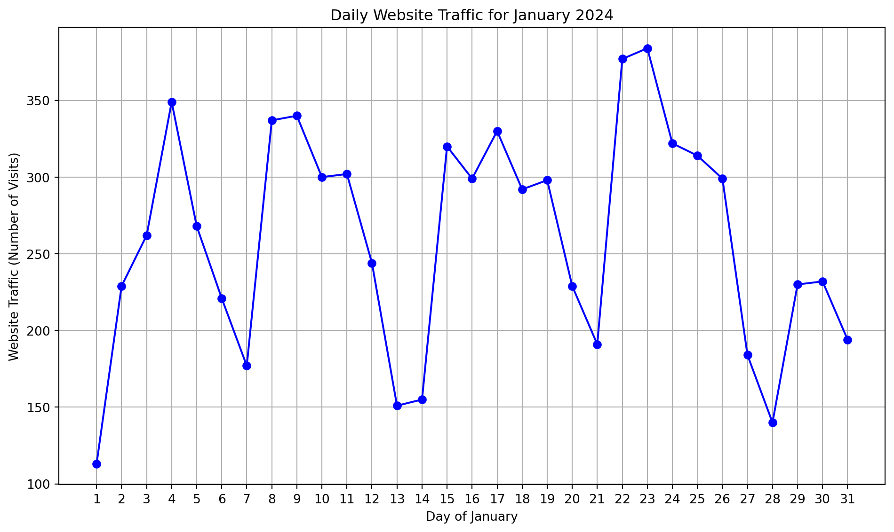
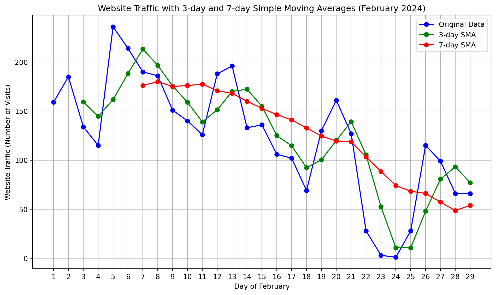
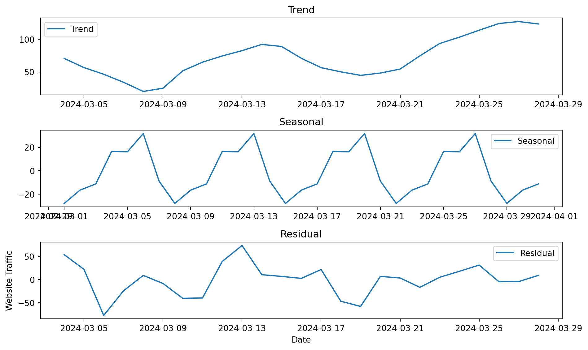

import matplotlib.pyplot as plt
import pandas as pd
# Daily website traffic data for January 2024
traffic_data = [
113, 229, 262, 349, 268, 221, 177, 337, 340, 300, 302, 244, 151, 155, 320,
299, 330, 292, 298, 229, 191, 377, 384, 322, 314, 299, 184, 140, 230, 232, 194
]Time series analysis provides a powerful framework for understanding and predicting website traffic patterns, enabling data-driven decision-making
Introduction
In today’s digital landscape, understanding and analyzing website traffic is crucial for businesses, bloggers, and developers. One powerful method for gaining insights from traffic data is time series analysis. Time series analysis helps to uncover patterns, trends, and seasonal behaviors in data that vary over time, making it an essential tool for optimizing website performance and decision-making.
A time series is a sequence of data points collected at regular intervals over time. For websites, traffic data typically includes metrics like the number of daily visits, page views, or unique visitors. Time series analysis enables us to track these metrics and detect patterns, helping answer questions like:
Are there predictable periods of high or low traffic?
How does traffic fluctuate during weekends or holidays?
What long-term trends can be observed?
Key Concepts in Time Series Analysis
Trend: The overall direction the data is moving. For example, if the traffic to a website has been steadily increasing over several months, we might identify an upward trend.
Seasonality: Recurring patterns that happen at regular intervals, such as daily or weekly traffic spikes. For instance, many websites experience increased traffic during weekdays and lower traffic on weekends.
Noise: Random variations in the data that do not follow any specific pattern. Identifying and smoothing out noise helps highlight more significant trends and patterns.
Stationarity: A stationary time series has a constant mean and variance over time. Many time series methods require the data to be stationary, so transformation techniques like differencing or log transformations might be used to achieve stationarity.
Why Use Time Series Analysis for Website Traffic?
Website traffic data often follows complex patterns due to factors like marketing campaigns, seasonal trends, and user behavior. Time series analysis allows us to:
Forecast future traffic: Using methods such as ARIMA (AutoRegressive Integrated Moving Average), you can predict how many visitors your site will have next month or next quarter.
Detect anomalies: Sudden spikes or drops in traffic can indicate issues such as website downtime or a viral post.
Optimize content and marketing strategies: By understanding traffic patterns, you can tailor your content release or marketing efforts to maximize impact during high-traffic periods.
Example Use Case: Analyzing January Traffic for a Website
Let’s say we want to analyze the daily website traffic for January 2024. We can collect the number of visits each day and visualize the data using a line chart. By applying time series analysis techniques, we can identify trends (e.g., an upward trend due to a new blog post), seasonality (e.g., reduced traffic on weekends), and detect any anomalies (e.g., traffic spikes after a major announcement).
After analyzing the data, we could use forecasting models like ARIMA to predict the number of visits in February, allowing for better resource planning or marketing campaigns.
Summary
Time series analysis transforms website traffic data into actionable insights. Whether you’re aiming to forecast future traffic, optimize campaigns, or monitor site performance, understanding the patterns in your website traffic is essential for growth. With tools like Python, R, or even Excel, you can easily get started with time series analysis and take your website to the next level.
Load the necessary libraries
# Create a pandas dataframe with the data
days = list(range(1, 32)) # Days of January
df = pd.DataFrame({
'Day': days,
'Traffic': traffic_data
})
print(days)[1, 2, 3, 4, 5, 6, 7, 8, 9, 10, 11, 12, 13, 14, 15, 16, 17, 18, 19, 20, 21, 22, 23, 24, 25, 26, 27, 28, 29, 30, 31]Time plot
# Plot the daily website traffic
plt.figure(figsize=(10, 6))
plt.plot(df['Day'], df['Traffic'], marker='o', linestyle='-', color='b')
plt.title('Daily Website Traffic for January 2024')
plt.xlabel('Day of January')
plt.ylabel('Website Traffic (Number of Visits)')
plt.grid(True)
plt.xticks(days)
plt.tight_layout()
# Display the plot
plt.show()
# Display traffic statistics
traffic_trend = df['Traffic'].describe()
print("\nDescriptive statistics\n", traffic_trend)
Descriptive statistics
count 31.000000
mean 260.741935
std 72.933745
min 113.000000
25% 207.500000
50% 268.000000
75% 317.000000
max 384.000000
Name: Traffic, dtype: float64Using the Simple Moving Average (SMA)
import matplotlib.pyplot as plt
import pandas as pd
# Example website traffic data for February 2024 (29 days in Feb)
traffic_data_feb = [
159, 185, 134, 115, 236, 214, 190, 186, 151, 140, 126,
188, 196, 133, 136, 106, 102, 69, 130, 161, 127, 28, 3,
1, 28, 115, 99, 66, 66
]
# Create a pandas dataframe with the data
days_feb = list(range(1, 30)) # Days of February (29 days)
df_feb = pd.DataFrame({
'Day': days_feb,
'Traffic': traffic_data_feb
})
# Calculate 3-day and 7-day simple moving averages
df_feb['3-day SMA'] = df_feb['Traffic'].rolling(window=3).mean()
df_feb['7-day SMA'] = df_feb['Traffic'].rolling(window=7).mean()
# Plot original data, 3-day SMA, and 7-day SMA
plt.figure(figsize=(10, 6))
# Plot original data
plt.plot(df_feb['Day'], df_feb['Traffic'], marker='o', linestyle='-', label='Original Data', color='b')
# Plot 3-day SMA
plt.plot(df_feb['Day'], df_feb['3-day SMA'], marker='o', linestyle='-', label='3-day SMA', color='g')
# Plot 7-day SMA
plt.plot(df_feb['Day'], df_feb['7-day SMA'], marker='o', linestyle='-', label='7-day SMA', color='r')
plt.title('Website Traffic with 3-day and 7-day Simple Moving Averages (February 2024)')
plt.xlabel('Day of February')
plt.ylabel('Website Traffic (Number of Visits)')
plt.grid(True)
plt.legend()
plt.xticks(days_feb)
plt.tight_layout()
# Display the plot
plt.show()
Seasonal Decomposition
import pandas as pd
from statsmodels.tsa.seasonal import seasonal_decompose
# Create a pandas dataframe
data = pd.DataFrame({
"date": pd.date_range(start="2024-03-01", end="2024-03-31", freq="D"),
"traffic": [99, 72, 86, 141, 95, 1, 1, 1, 0, 0, 42, 130, 188, 94, 68,
57, 67, 20, 3, 87, 49, 30, 82, 110, 162, 136, 155, 124, 102, 103, 84]
})
# Perform seasonal decomposition using an additive model
decomposition = seasonal_decompose(data["traffic"], model="additive", period=7)
# Extract trend, seasonal, and residual components
trend = decomposition.trend
seasonal = decomposition.seasonal
residual = decomposition.resid
# Plot the components
import matplotlib.pyplot as plt
plt.figure(figsize=(10, 6))
plt.subplot(311)
plt.plot(data["date"], trend, label="Trend")
plt.legend()
plt.title("Trend")
plt.subplot(312)
plt.plot(data["date"], seasonal, label="Seasonal")
plt.legend()
plt.title("Seasonal")
plt.subplot(313)
plt.plot(data["date"], residual, label="Residual")
plt.legend()
plt.title("Residual")
plt.xlabel("Date")
plt.ylabel("Website Traffic")
plt.tight_layout()
plt.show()